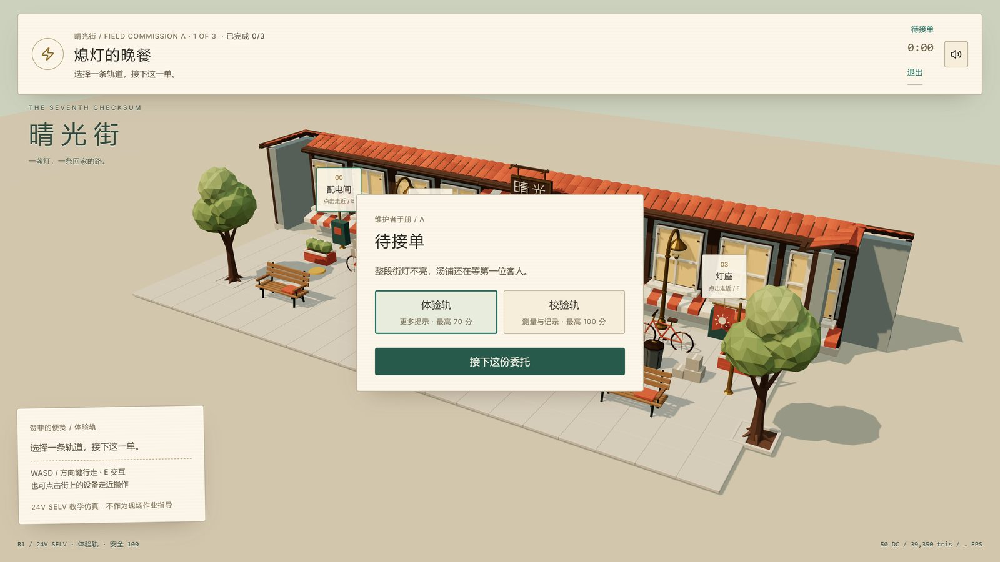
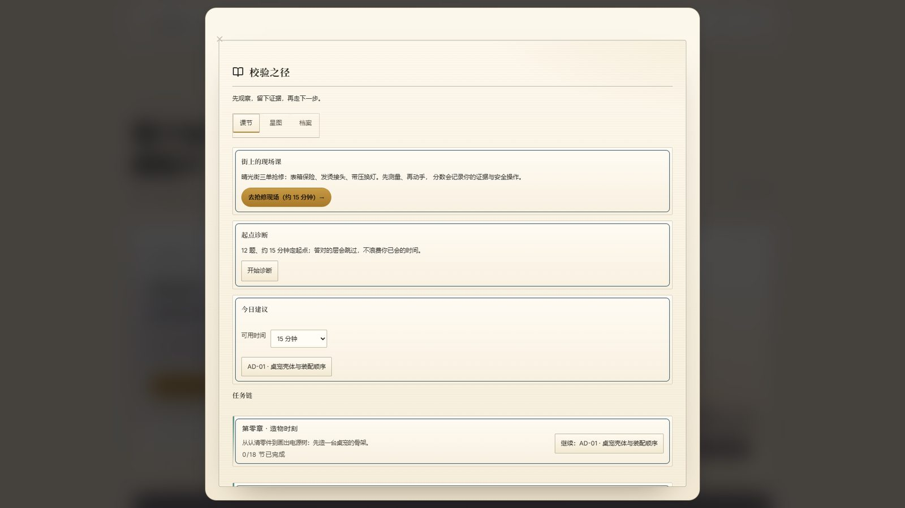
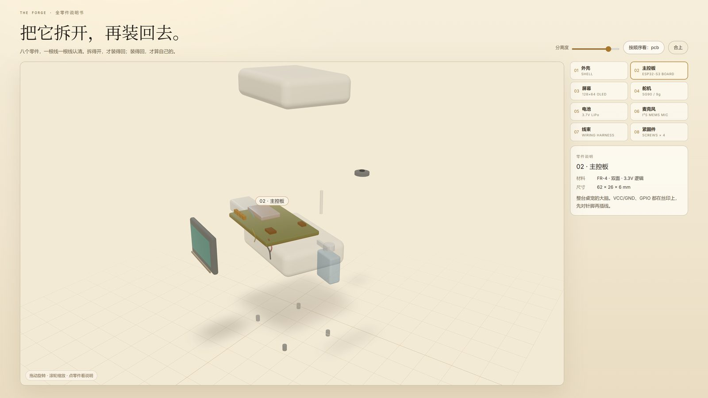

修好一座会呼吸的城市。
你是流明域的校验员。晴光街的灯一盏一盏暗下去，配电闸、表箱、接头、灯座——每一处都要先测量、再判断、最后亲手修好。修一条街，学一套真本事。
每一个谜题背后都是一条真实工程知识：万用表档位、串联分压、接触电阻、保护配合。修好之后，街会亮，人会回来。
三单委托，从「熄灯的晚餐」到「不能熄灭的灯」。看读数、留证据、写结论，按正确顺序合闸。
八个零件，一根线一根线认清。拆得开，才装得回；装得回，才算自己的。
课节进度、证据链、维护者档案都留在本机。没有排行榜，不比较，只记录你修亮了什么。
36 节可玩课，从用电安全到万用表、面包板、焊接、传感器，再到芯片入门。每节课都要求接线、读数、判断与提交——做对了才算掌握。



v1.0 聚焦单机体验：晴光街、现场课、爆炸图与档案全部离线可玩。联机非对称玩法「4v1」放在下一个大版本，不承诺上线日期。
v15 · 32.5MB。竖屏/横屏自适应，触屏摇杆已实测。覆盖安装会保留本地存档。
SHA-256 27CF12282536A48FD5192FA711B23BCCB25DC3FAD9B2E0790811CB742A798B44
内测阶段暂不公开直链：请在项目仓库或维护者处获取。
Windows x64 免安装 zip，解压双击 exe。画质上限更高（Tier3 2× DPR / 4096 阴影）。
SHA-256 95570970DDC2ACE85BB97617F3B865B8ECE94A3FE34B5296D02EBF7CF61640F3
内测阶段暂不公开直链：请在项目仓库或维护者处获取。